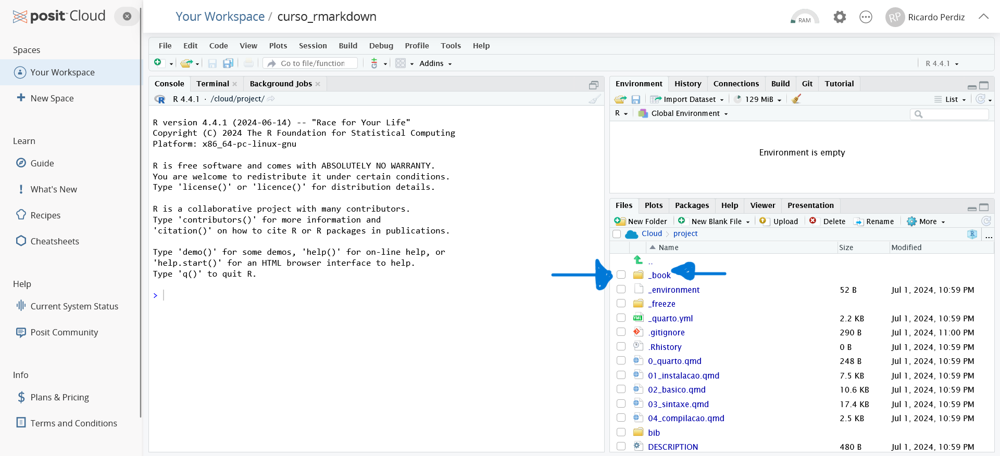

![]()
| Pacote | Versão | Fonte |
|---|---|---|
| blogdown | 1.19 | CRAN (R 4.4.0) |
| bookdown | 0.39 | CRAN (R 4.4.0) |
| knitr | 1.45 | CRAN (R 4.4.0) |
| leaflet | 2.2.2 | CRAN (R 4.4.0) |
| officedown | 0.3.2.001 | Github (davidgohel/officedown@d25e542357435e88ada28191b38b39c3aeb98e37) |
| officer | 0.6.5 | CRAN (R 4.4.0) |
| quarto | 1.4 | CRAN (R 4.4.0) |
| rmarkdown | 2.27 | CRAN (R 4.4.0) |
| tinytex | 0.51 | CRAN (R 4.4.0) |
| webshot2 | 0.1.1.9000 | Github (rstudio/webshot2@37a47513d86768fb2f0865d3ec8e70ee7b0df1b8) |
| xaringan | 0.30.1 | Github (yihui/xaringan@0f942ca1ee772944f23b4bb2f550a376053e4e9a) |
Introdução ao Rmarkdown e Quarto
Prefácio

Este livro compreende conceitos básicos sobre o uso de Rmarkdown e Quarto para a produção de relatórios, apresentações, artigos, livros e diversos outros produtos.
O objetivo primário deste livro é servir como material de apoio para os discentes da disciplina “Produção de documentos científicos com a linguagem Rmarkdown”, oferecida no Programa de Pós-graduação em Recursos Naturais (PRONAT) da Universidade Federal de Roraima (UFRR), com previsão de início em julho de 2024. Além disso, outro objetivo é poder disponibilizar um material em português de qualidade, de forma a aumentar a acessibilidade e abrangência de uso desta ferramenta, visto que a maioria dos livros e tutoriais que tratam de Rmarkdown são disponibilizados na língua inglesa.
O que é Rmarkdown?
RMarkdown é uma linguagem de marcação simples e poderosa, capaz de gerar diferentes tipos de documentos com elevada qualidade gráfica. Além disso, a linguagem é capaz de ser mesclada com códigos de programação, oferecendo então ao usuário a possibilidade de produzir documentos dinâmicos e interativos.
Por que usar Rmarkdown?
A linguagem foi projetada para ser usada de três maneiras (veja capítulo Introduction em Wickham e Grolemund (2017)):
- Comunicação com tomadores de decisão - foco é no resultado, e não no código que gera um resultado;
- Comunicação com outros cientistas - foco tanto no resultado quanto no código;
- Como um ambiente para se fazer ciência de dados e documentar não somente o que você fez mas também como você fez.
Estrutura do livro
O livro está dividido em duas partes. A primeira parte foca no ensino do Rmarkdown, enquanto a segunda foca no ensino do Quarto. Inicialmente, o livro focará mais em conteúdo para a primeira parte; a segunda parte, futuramente, poderá ser desmembrada e virar um novo livro digital.
Na parte 1, temos os seguintes capítulos:
- Capítulo “Instalação de programas” aborda a instalação de programas necessários para poder compilar arquivos Rmarkdown e poder fazer uso de suas funcionalides.
- Capítulo “Conceitos básicos” trata de explicar o que é o Rmarkdown, como se originou, e qual é a estrutura de um arquivo desse tipo, além de fornecer um breve histórico sobre essa ferramenta.
- Capítulo “Sintaxe” trata da sintaxe em Markdown. Lá você aprenderá como escrever em itálico, negrito, inserir figuras, tabelas e outras coisas mais.
- Capítulo “Compilação” ensinará a compilar arquivos Rmarkdown usando o RStudio ou por meio de linhas de comando e ensinará o fluxo de trabalho por trás da compilação dos diferentes produtos.
Após a segunda parte, temos dois capítulos:
- Capítulo “Exemplos” que disponibiliza alguns arquivos em Rmarkdown contendo códigos, que podem ser mesclados de forma a facilitar a produção de documentos contendo figuras, tabelas, mapas e afins, por estudantes iniciantes.
- Capítulo “Referências” lista as referências citadas ao longo deste trabalho.
A parte 2 ainda não começou a ser construída, possui apenas o capítulo “Quarto” disponível até o momento e sem conteúdo.
Nota
Você pode encontrar os arquivos .qmd que geraram este livro neste endereço: https://github.com/ricoperdiz/curso_rmarkdown/tree/main.
Contribuições
Estas páginas são tanto um sítio digital como um livro, e ele se encontra em constante atualização. Sua contribuição é muito importante, então sinta-se à vontade para deixar sua opinião e sugestão. Caso encontre algum erro tipográfico, caso possua sugestões de melhora, tenha o desejo de ser um colaborador, permanente ou eventual, entre em contato comigo ou visite a seção de problemas (=“issues”) no repositório do livro, disponível neste endereço https://github.com/ricoperdiz/curso_rmarkdown/issues, e deixe lá sua contribuição/observação.
Comentários
Uma outra forma de participar é você deixar comentários diretamente no livro, ao fim de cada página principal (Figura 1). Para isso, é necessário que você possua uma conta no GitHub, faça o login e, uma vez logado, deixe seu comentário. Todos os comentários podem ser observados dentro da aba Discussions na página do repositório: https://github.com/ricoperdiz/curso_rmarkdown/discussions.
Pré-requisitos
Devido ao modo como foi construído, este livro pode ser tanto lido quanto “executado”, uma vez que seus arquivos são o que chamamos de Rmarkdown, uma linguagem que mistura texto com código. Sendo assim, o livro pode ser visualizado em computadores, em celulares modernos, e em tablets. É importante que o usuário possua uma noção básica sobre o funcionamento da linguagem R. Caso você não tenha, busque saber o básico. Há muito material disponível na rede, dentre os quais sugiro o livro Curso básico de introdução à linguagem R, escrito em português e de livre acesso.
Pensando na possibilidade de os leitores deste livro possuírem ou não um computador em mãos, disponibilizo abaixo instruções para que vocês possam aproveitar as lições deste livro usando um celular moderno ou tablet. Espero que as instruções sejam úteis e possam abranger um maior número de pessoas.
Caso você possua um computador
Se você tiver um computador em mãos, proceda para o capítulo “Instalação de programas” para instalar todos os programas necessários para executar arquivos escritos em Rmarkdown.
Caso você não possua um computador
Se você tiver apenas um celular moderno ou um tablet em mãos, sugiro que você faça uso da infraestrutura fornecida pela Posit, a criadora e mantenedora do RStudio. A Posit disponibiliza de graça (com limitações) o Posit Cloud, uma versão online do RStudio. Uma vez tendo uma conta na Posit Cloud, você pode importar o conteúdo deste livro na forma de um Projeto, e executar todo o conteúdo do livro na rede, estando conectado na Posit. Que tal?
Para poder fazer isso, siga os passos abaixo:
- Visite o sítio da Posit Cloud: https://posit.cloud/ (Figura 2).
- Conecte-se à Posit Cloud clicando no botão Login. Lá você verá várias opções de login. Sugiro que use ou sua conta Gmail ou sua conta GitHub para logar (Figura 3).
- Uma vez conectado à Posit Cloud, a tela inicial será parecida com a exibida na Figura 4.
- Crie um projeto clicando no botão New project (Figura 5).
- Ao clicar no no botão New project, selecione a opção New Project from Git Repository (Figura 7).
- Digite na caixa URL of your Git Repository o endereço do repositório GitHub deste livro: https://github.com/ricoperdiz/curso_rmarkdown. Em seguida, clique no botão Ok.
- Em seguida, o Posit Cloud se conectará ao repositório e importará o conteúdo como se contra no momento da importação ao seu espaço Posit Cloud. Ao finalizar a importação, o RStudio em versão virtual se abrirá e apresentará um conteúdo similar ao apresentado na Figura 8.

Pronto! Agora você poderá ver o conteúdo bruto deste livro no seu telefone/tablet, além de poder ter acesso ao conteúdo das páginas em HTML, geradas por meio de arquivos qmd do Quarto. As páginas em HTML estão disponíveis na pasta _book (Figura 9).
_book/, que contem as páginas em HTML deste livro. Esta pasta fica disponível no Posit Cloud, após você importar o conteúdo do repositório onde se encontra todos os capítulos deste livro, disponíveis no endereço https://github.com/ricoperdiz/curso_rmarkdown.
Conectar mouse e teclado a um telefone Android
Pensando na dificuldade de estudar as aulas do livro usando somente a tela pequena de um celular, é necessário pensar em otimizar o tamanho da tela para que você possa ler o conteúdo e também escrever. Para isso, seria bom considerar a possibilidade de conectar um teclado e um mouse ao telefone. Para isso, é necessário saber se o seu telefone é compatível com um adaptador OTG.
Sendo compatível, obtenha um adaptador OTG e o conecte ao seu celular. Em seguida, você conecta o teclado ou o mouse no adaptador. Caso você deseje utilizar tanto o mouse quanto o teclado, você também necessitará de um hub USB.
Com um hub USB em mãos, você conecta o mouse e o teclado no hub USB e, em seguida, conecta o hub ao adaptador OTG, que já estará conectado ao telefone. Pronto, agora é curtir as aulas deste livro.
Para facilitar o entendimento das instruções acima, veja o vídeo abaixo com essas instruções:
Informações sobre a compilação deste livro
Este livro foi construído por meio da plataforma Quarto 1, versão 1.5.52, dentro do ambiente R versão 4.4.1 (2024-06-14 ucrt). Utilizei o RStudio, versão 2024.4.2.764, dentro do sistema operacional Windows 11 x64 (build 22631). Abaixo disponibilizo as informações sobre os pacotes utilizados durante a construção deste livro:
Convenções
Adotamos o nome “Rmd” para se referir ao formato de arquivo Rmarkdown, cuja extensão é “.Rmd”. Vamos nos referir ao Rmarkdown ao longo deste livro como “Rmd”. Nomes de pacotes aparecerão em negrito (e.g., knitr, rmarkdown). Quando fizermos referência a uma função de um determinado pacote, adotaremos a notação nomeDoPacote::nomeDaFuncao(), e a mesma aparecerá com uma coloração no fundo diferente da do corpo do texto.
Agradecimentos
O presente trabalho foi realizado com apoio da Coordenação de Aperfeiçoamento de Pessoal de Nível Superior – Brasil (CAPES) – Código de Financiamento 001.
Este livro é produto de anos se dedicando a aprender programação e novas formas de apresentar e visualizar dados e resultados. Então, é natural deixar meus agradecimentos a todos que passaram, passam e continuarão a passar por minha vida, sempre a me ensinar algo ou a me inspirar.
Naturalmente, por ter tido a decisão de escrever um livro sobre Rmarkdown, cabe aqui meu agradecimento ao criador da linguagem Markdown, John Gruber, e um agradecimento especial, como admirador e fã de seu trabalho, ao criador dos pacotes mais interessantes, a meu ver, da última década no ambiente R, o Yihui Xie; eu passei a usar Rmarkdown por inspiração em suas postagens, ele criou vários pacotes importantes para o desenvolvimento da linguagem 2, e tem vídeos interessantíssimos que divulgam vários desses pacotes e suas funcionalidades.
Para finalizar, agradeço à minha filha por ser minha inspiração diária.
Ao PRONAT UFRR, por me oferecer um espaço para eu realizar minha pesquisa, e dar a oportunidade de ensinar.
E ao Divino, sempre üôè.
O Quarto é uma reimaginação multilínguas e multifuncionalidades do Rmarkdown. Para saber mais, visite https://quarto.org/.↩︎
Pacotes knitr, bookdown, blogdown, pagedown, xaringan e tinytex, entre outros.↩︎